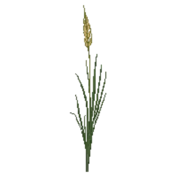

Northern Sea Oats
Chasmanthium latifolium

Northern Sea Oats is a grass for focal point, mid-border, suited to full sun to partial shade and clay or loam, flowering Jul, Aug, Sep, Oct.
| Type | Grass |
|---|---|
| Mature height | 90 cm |
| Spread | 75 cm |
| Aspect | full sun to partial shade |
| Foliage | Deciduous |
| Hardiness | USDA 3a-8a |
| Pollinator-friendly | No |
| Pet-safe | Yes |
Where to use it in a border
At around 90 cm, it sits best toward the back of a border, or on its own as a focal point with room around it. Give it about 75 cm of room to spread. It is hardy across USDA zones 3a to 8a, so check it suits your area before planting.
It appears in our lists of shade, clay soil, pet-safe plants.
Flowering through the year
Worth knowing
- It tolerates a shaded, north-facing spot.
Good companions
Plants that share its conditions and style, chosen to complement its place in the border:
- Creeping Phlox 'Sherwood Purple'to edge in front
- Florida Leucothoefor height behind it
- Virginia Sweetspire 'Henry's Garnet'to flower when it does not
- Virginia Sweetspire 'Little Henry'to edge in front
- Yellow Anisefor height behind it
- Cast-Iron Plantto edge in front
Garden styles
Foundation planting Native Shade cottage Wildlife garden Woodland
See Northern Sea Oats set in a full border, with spacing and companions worked out for your own conditions, in Border Builder.
Sources
Bloom timing and hardiness drawn from:
- NC State Extension (plants.ces.ncsu.edu, 2026-05)